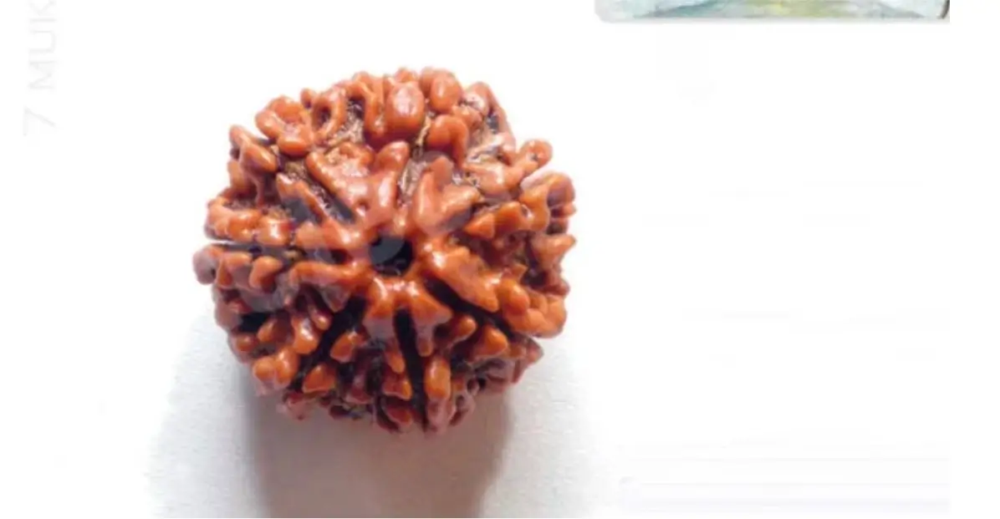
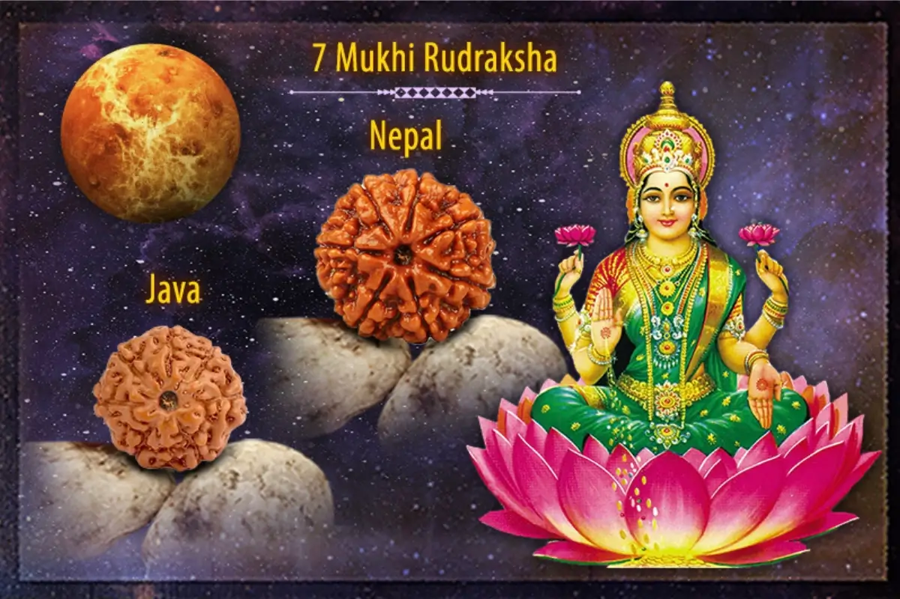
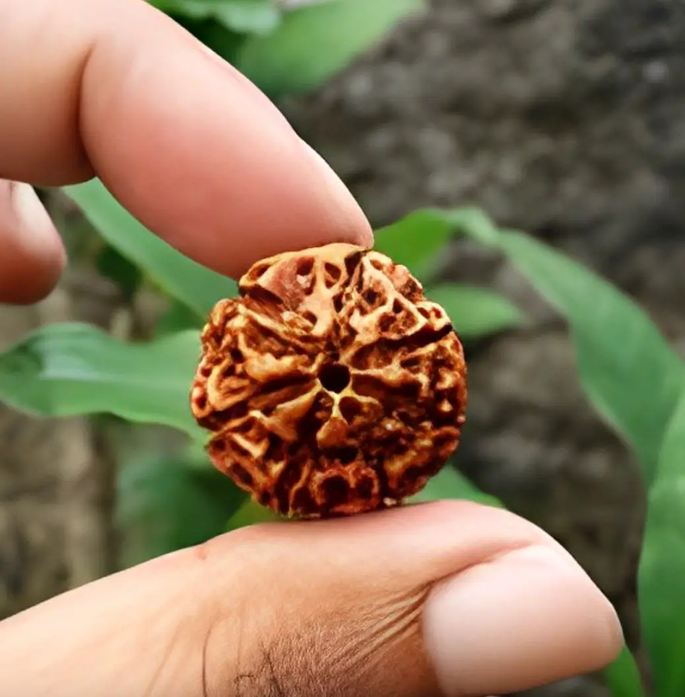

Saat Mukhi Rudraksha - Hạt Kim Cang 7 Khía

Hạt Rudraksha 7 Mukhi (Saat Mukhi Rudraksha) hay còn được gọi là Hạt Kim Cang 7 khía, có nguồn gốc từ các cây Elaeocarpus ganitrus mọc ở khu vực nhiệt đới của Nam Á, Đông Nam Á.
Xác suất tạo ra Hạt Kim Cang 7 khía khá thấp, dao động trong khoảng 1% đến 10%. Cây Elaeocarpus càng lâu năm thì càng dễ tạo ra hạt Rudraksha 7 Mukhi.
Hạt Kim Cang 7 khía được cấu tạo từ bảy đường vân dọc tự nhiên chia hạt thành bảy phần. Từ xa xưa khi đeo hạt Saat Mukhi Rudraksha sẽ loại bỏ những đau khổ, xui xẻo và bất hạnh. Nó xoa dịu những phiền não do đó mang lại cho người đeo nó sự an tâm, dồi dào và hài hòa trong các mối quan hệ.
Hạt Kim Cang 7 khía được cho là một trong những hạt kim cang tốt lành nhất. Con số bảy được coi là một trong những con số may mắn nhất trong số học. Hạt Rudraksha 7 Mukhi được ban cho người đeo tài năng nghệ thuật, hiểu biết, vẻ đẹp, hạnh phúc và danh vọng vì nó bị ảnh hưởng bởi sao Kim.
Từ xa xưa khi đeo hạt Saat Mukhi Rudraksha sẽ loại bỏ những đau khổ, xui xẻo và bất hạnh. Nó xoa dịu những phiền não do đó mang lại cho người đeo nó sự an tâm, dồi dào và hài hòa trong các mối quan hệ.
Ý nghĩa của hạt Rudraksha 7 Mukhi

Hạt Rudraksha này là một trong những hạt được tôn kính và đánh giá cao nhất trong số tất cả các Rudraksha khác. Ý nghĩa của hạt Rudraksha này là nó tượng trưng cho sự giàu có và thịnh vượng vì vị thần cai trị nó là Nữ thần Lakshmi. Hạt Kim Cang 7 Khía nắm giữ các nguyên tắc thiêng liêng của vị thần cầm quyền và mang lại rất nhiều lợi ích, mở ra cánh cửa cho những cơ hội mới. Ngay khi Rudraksha này tiếp xúc với da, nó sẽ được kích hoạt và bắt đầu hoạt động. Hạt mạnh mẽ này biểu thị lòng can đảm và niềm tin dọc theo lòng tự trọng cao.
Lợi ích của hạt Rudraksha 7 Mukhi

Hạt Rudraksha 7 mukhi được cho là mang lại nhiều lợi ích cho người đeo, bao gồm cả lợi ích về sức khỏe thể chất và tinh thần. Dưới đây là một số lợi ích cụ thể của hạt Rudraksha 7 mukhi:
Cải thiện sức khỏe tổng thể
Hạt Kim Cang 7 Mukhi được cho là có tác dụng cải thiện sức khỏe tổng thể của người đeo, bao gồm cả sức khỏe thể chất và tinh thần. Cụ thể, hạt này có thể giúp:
- Tăng cường hệ miễn dịch
- Giảm căng thẳng và lo lắng
- Cải thiện giấc ngủ
- Cải thiện tiêu hóa
- Tăng cường sức khỏe tim mạch
Giúp giảm căng thẳng và lo lắng
Hạt Rudraksha 7 mukhi có tác dụng giúp giảm căng thẳng và lo lắng. Điều này là do hạt Rudraksha có chứa các khoáng chất có tác dụng an thần và thư giãn. Khi đeo hạt, người đeo có thể cảm thấy bình tĩnh và thư thái hơn, từ đó giúp giảm căng thẳng và lo lắng.
Giúp tăng cường khả năng tập trung
Hạt Rudraksha 7 mukhi được tin rằng hỗ trợ giúp tăng cường khả năng tập trung. Do hạt này có chứa các khoáng chất có tác dụng kích thích não bộ. Khi đeo loại hạt Rudraksha này, người đeo có thể cảm thấy tập trung hơn, từ đó giúp nâng cao hiệu quả học tập và làm việc.
Giúp thu hút may mắn và tài lộc
Hạt Rudraksha 7 mukhi giúp thu hút may mắn và tài lộc. Người đeo có thể cảm thấy may mắn và thịnh vượng hơn.
Cách đeo hạt Rudraksha 7 Mukhi
Hạt Rudraksha 7 Mukhi có thể được đeo theo nhiều cách khác nhau, chẳng hạn như:
Đeo làm vòng cổ
Đây là cách đeo hạt phổ biến nhất. Vòng cổ hạt Rudraksha có thể được đeo quanh cổ hoặc thắt lưng.
Đeo làm vòng tay
Vòng tay hạt Rudraksha 7 Mukhi cũng là một cách đeo phổ biến khác. Vòng tay hạt Saat Mukhi Rudraksha có thể được đeo ở tay trái hoặc tay phải.
Đeo làm chuỗi hạt
Hạt này cũng có thể được đeo làm chuỗi hạt. Chuỗi hạt Saat Mukhi Rudraksha có thể được đeo như một món đồ trang sức hoặc để thiền định
Loại hạt Rudraksha phù hợp nhất cho các doanh nhân, người phục vụ, nhà hùng biện và nhà văn. Nó đặc biệt có lợi cho những người bị khó khăn về tài chính hoặc tình trạng tinh thần không ổn định.
Nếu bạn đang tìm kiếm một loại hạt Rudraksha để mang lại may mắn, thịnh vượng và bảo vệ cho mình, thì hạt Rudraksha 7 Mukhi là một lựa chọn tuyệt vời.
Giá của hạt Rudraksha 7 Mukhi
Hạt Rudraksha 7 Mukhi là một trong những hạt Rudraksha được đánh giá cao nhất trong số tất cả các hạt khác. Giá của hạt này dao động vào khoảng 25$ phụ thuộc vào kích thước và nguồn gốc của hạt. Ngoài ra, nguồn gốc của hạt cũng đóng vai trò quyết định giá trị của hạt.